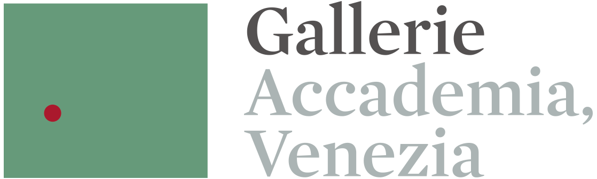

Gallerie
Accademia, Venezia
Accademia, Venezia
Comfort Monitoring –
Gallerie dell’Accademia di Venezia
Visitor feedback for environmental quality and well-being
Start Survey Scan to open survey
Scan to open survey